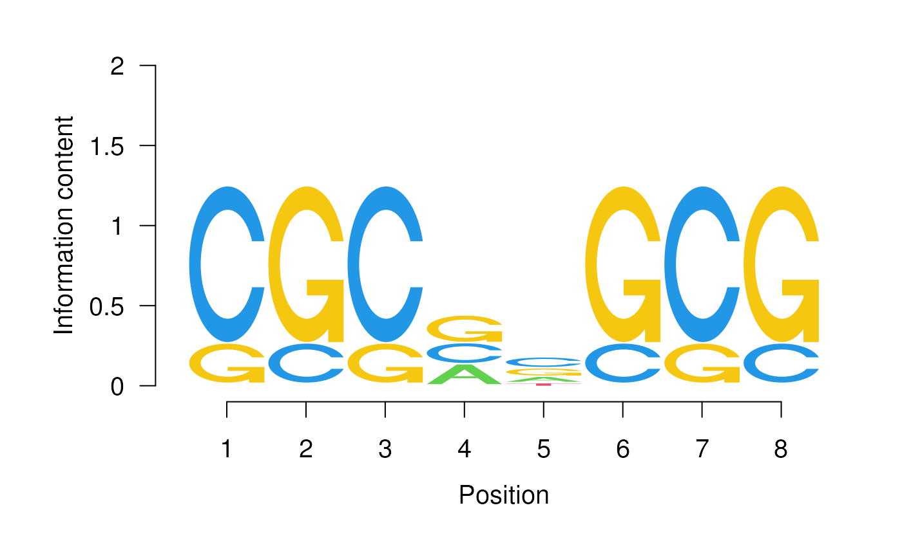

This function takes the alphabet*width position weight matrix of a sequence motif and plots the corresponding sequence logo.
seqLogo(pwm, ic.scale=TRUE, xaxis=TRUE, yaxis=TRUE, xfontsize=15, yfontsize=15,
fill=c(A='#61D04F', C='#2297E6', G='#F5C710', T='#DF536B'))numeric. The alphabet*width position weight matrix.
logical. If TRUE, the height of each column is proportional to its information content. Otherwise, all columns have the same height.
logical. If TRUE, an X-axis will be plotted.
logical. If TRUE, a Y-axis will be plotted.
numeric. Font size to be used for the X-axis.
numeric. Font size to be used for the Y-axis.
character. Fill color to be used for the letters. Must be a named character vector of length equal to number of rows in pwm slot and names identical to its rownames.
NULL.
mFile <- system.file("extdata/pwm1", package = "seqLogo")
m <- read.table(mFile)
p <- makePWM(m)
seqLogo(p)
